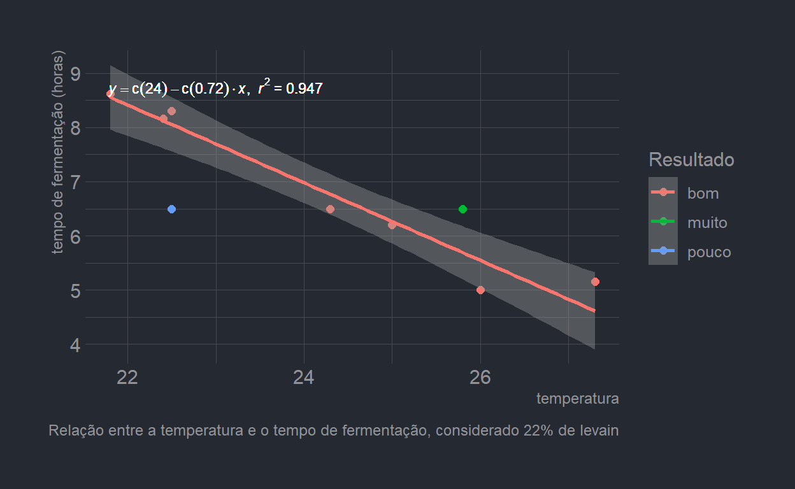
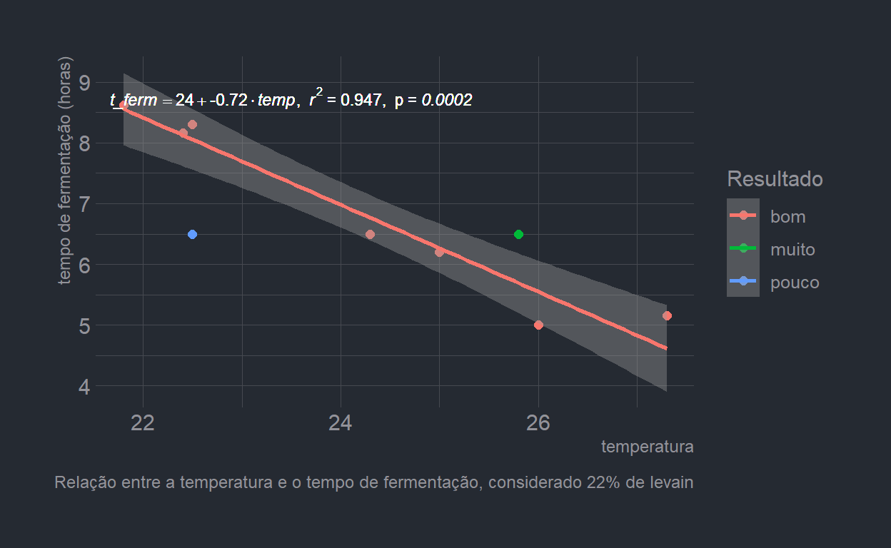
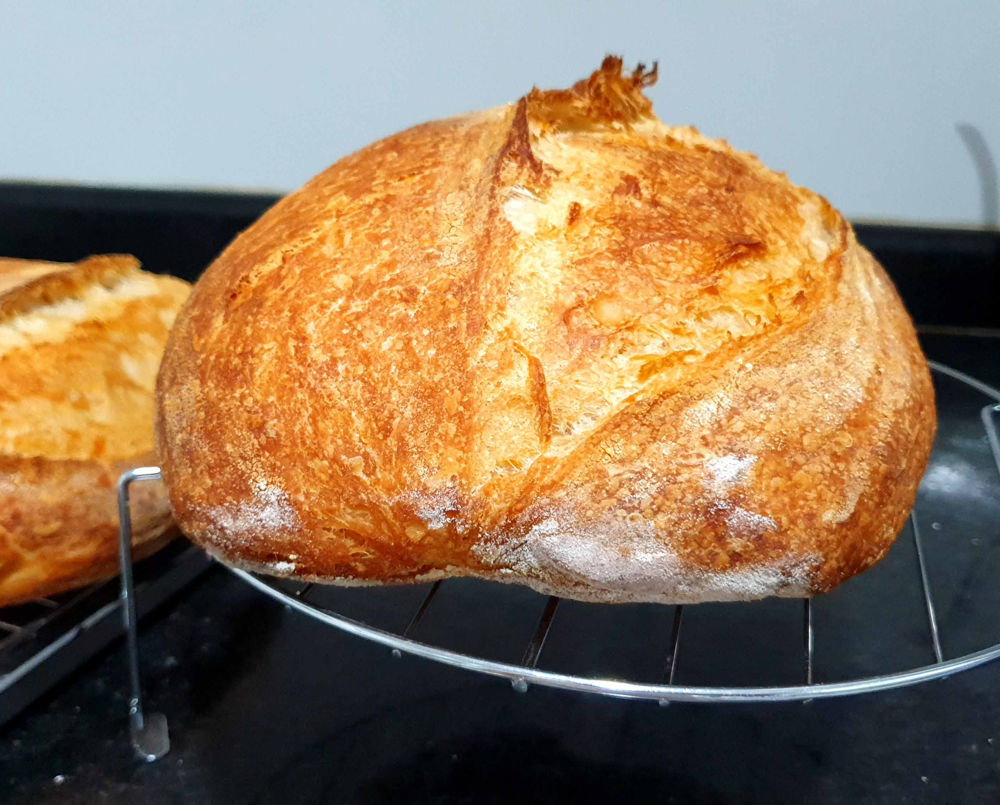

Data nerd usando regressão para fazer pão.
Como todos na quarentena, resolvi desenvolver minhas habilidades como padeiro (cuidar da casa, de duas crianças, do cachorro e do matrimônio não era suficiente…). E, como todo mundo que tenta se aventurar no mundo da fermentação natural, tomei uma surra.
No entanto, data nerd que me tornei, resolvi aplicar meus conhecimentos de estatística e de programação para me ajudar na tarefa de dominar a arte da panificação.
Minha maior dificuldade no início era ajustar o tempo de fermentação de acordo com a temperatura do dia. Há outras variáveis que influenciam o processo, mas o que menos eu conseguia controlar era esse.
O primeiro passo foi criar um dataset com minhas experiências. Fiz no Google Sheets e importei para o R usando um pacote muito bacana chamado googlesheets4. O resultado foi esse gráfico aqui:
Com isso, tinha uma ferramenta que ajudava bem na hora de planejar a fermentação, mesmo não sendo infalível.
Desafiando minhas habilidades no GGplot, fiz ainda mais duas versões, acrescentando a equação da regressão:

E, para melhorar, acrescentando o p_valor:

Ainda não estou no nível do pessoal da SlowBakery, mas o pão está ficando bonito! :-)
